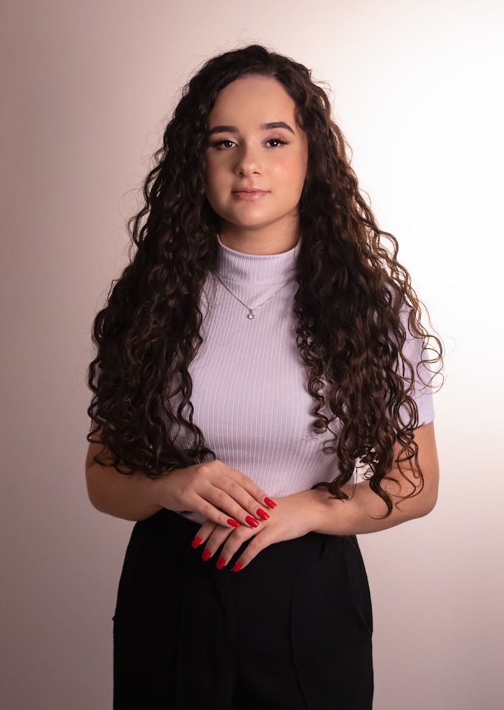
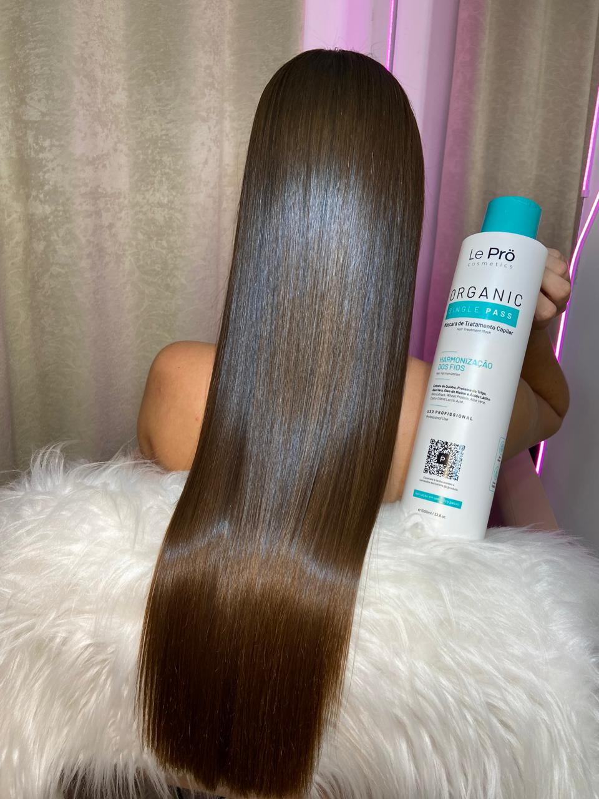
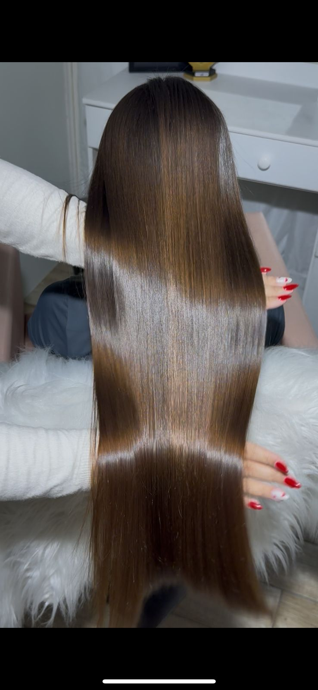
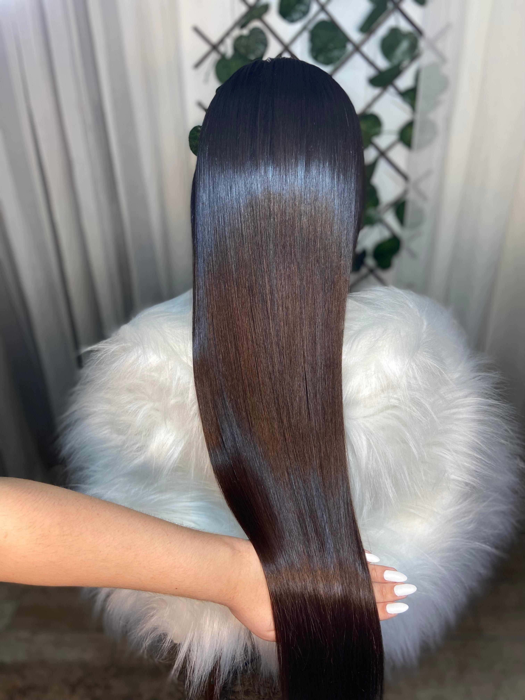

Espaço Amanda Hair Muito mais que um liso perfeito, uma experiência transformadora
Alisamento orgânico personalizado
Te entrego um liso perfeito, saudável e com brilho, que te traz praticidade no dia a dia. Especialista em alisamento premium em Balneário Camboriú, de alto padrão.
- Atendimento personalizado e humanizado.
- Lisos impecáveis que realçam a beleza .
- Além de encantar suas clientes, Amanda compartilha todo o seu conhecimento através de cursos presenciais e on-line, formando novas profissionais e inspirando histórias de sucesso.
Veja o resultado dos nossos procedimentos




Minha História
Amanda Hair deu seus primeiros passos no mundo dos alisamentos. Hoje, com mais de 5 anos de experiência e inúmeros cursos de especialização, ela se tornou referência no liso perfeito, se destacando na área por transformar cabelos com resultados surpreendentes e duradouros.
sem formol, sem cheiro forte, sem ardência, sem desconforto
resultados de excelência e duradouros
atendimento personalizado pensando no conforto e bem-estar